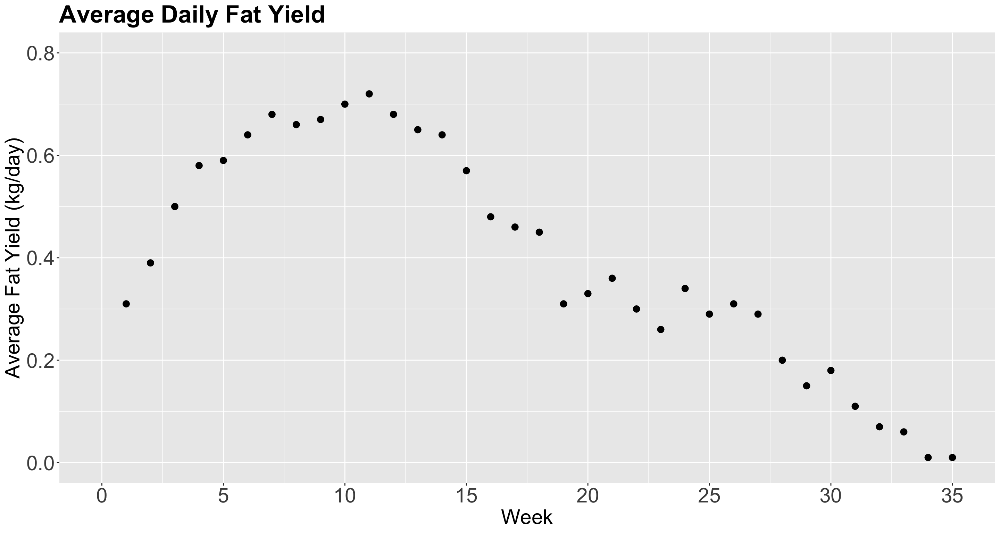
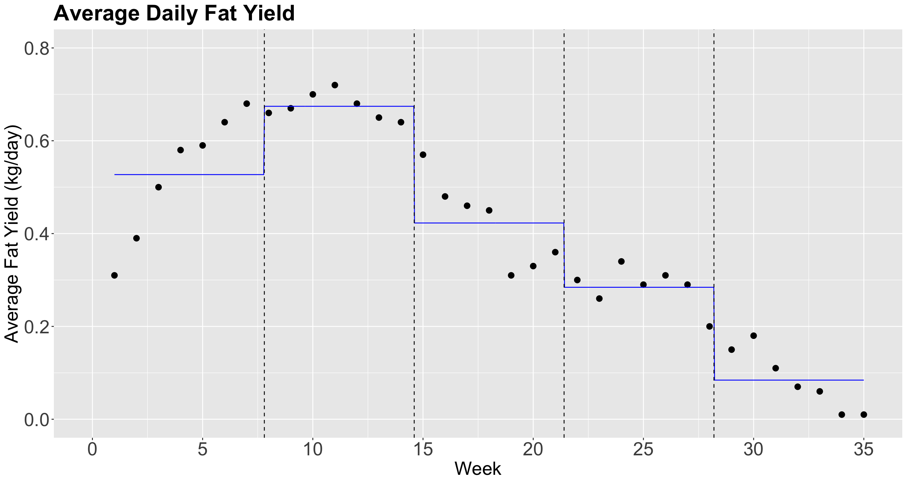
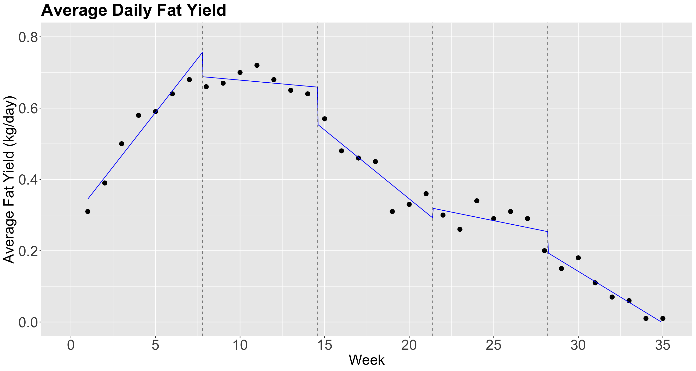
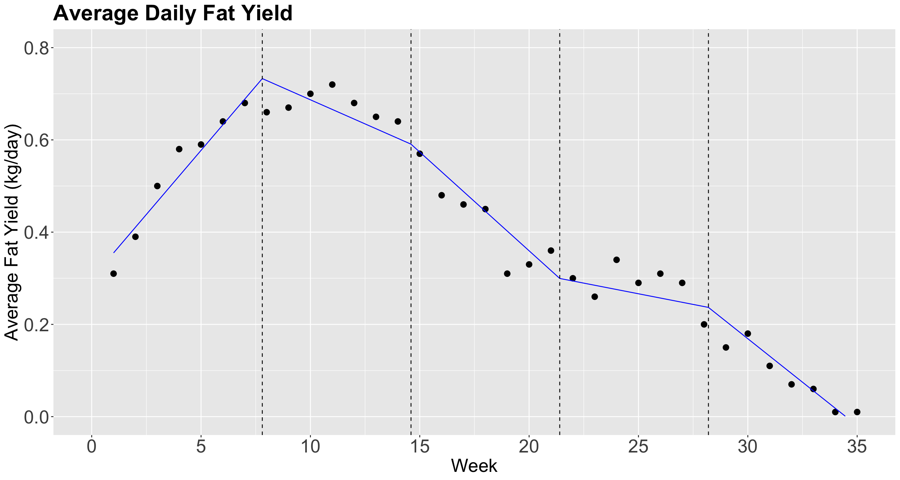
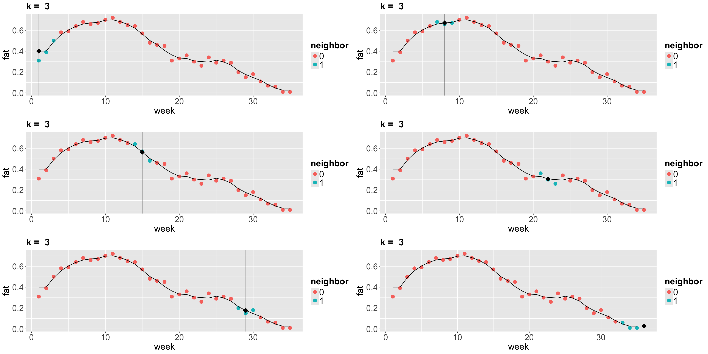
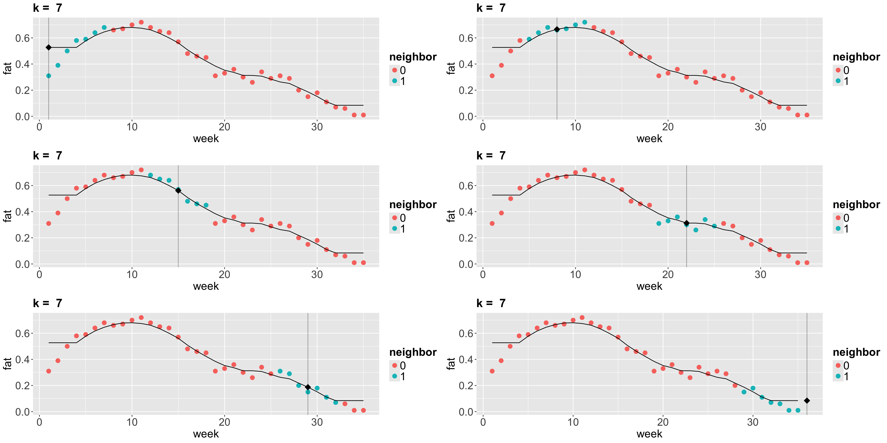
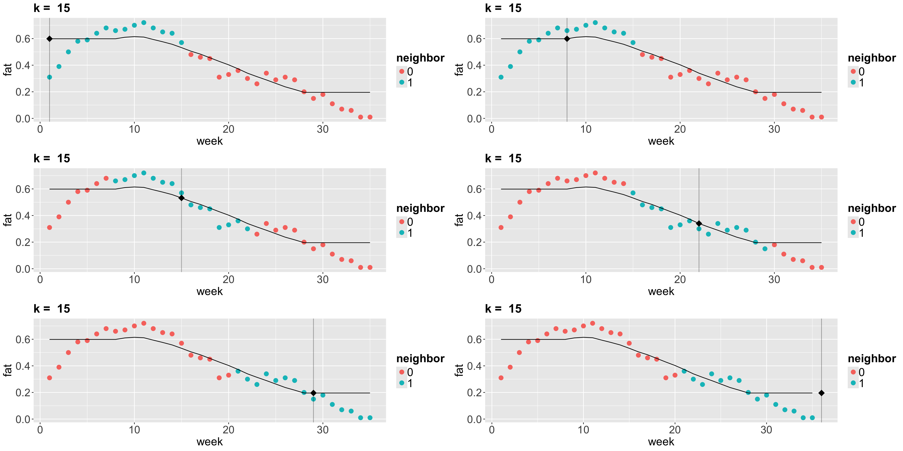
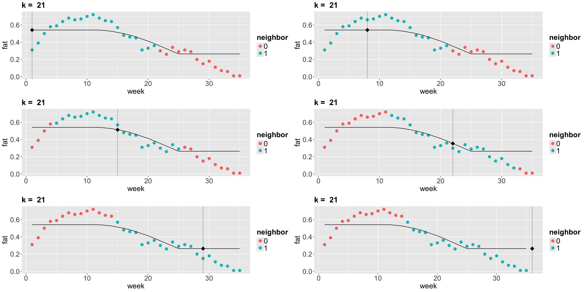
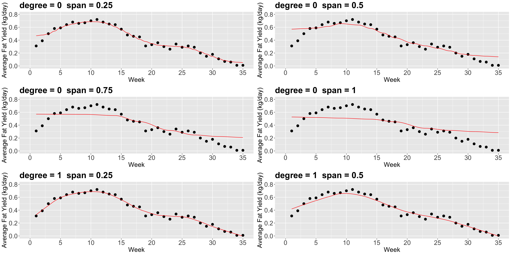
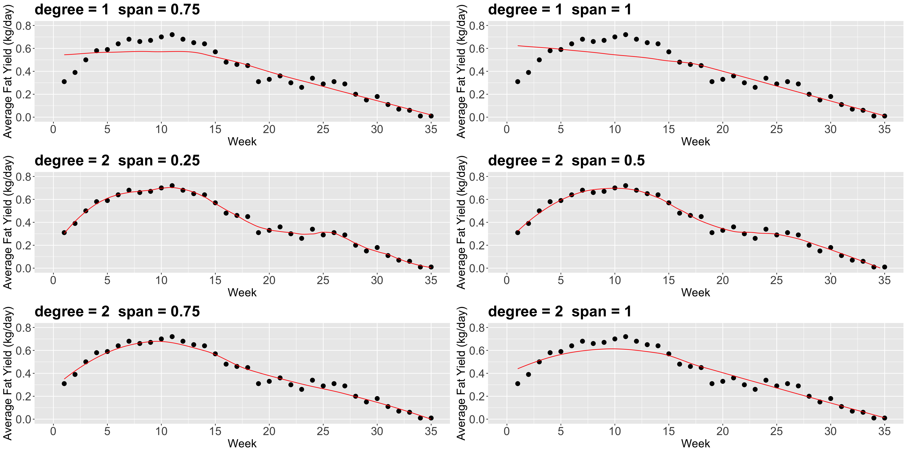

Lecture 6
Local Regression
(Please, sign in on iClicker)
Today’s Learning Goals
By the end of this lecture, you should be able to:
- Define the concept of local regression.
- Model and perform piecewise constant, linear, and continuous linear local regressions.
- Extend the concept of \(k\)-NN classification to a regression framework.
- Define and apply locally weighted scatterplot smoother regression.
It is time to…
Put aside regression techniques on the global conditioned mean and check local alternatives suitable for predictions!

1. Piecewise Local Regression
- Retaking our initial motivation in this course, the classical linear regression model (Ordinary Least-squares, OLS) is focused on the conditional mean on the regressors:
\[ \mathbb{E}(Y_i \mid X_{i,j} = x_{i,j}) = \beta_0 + \beta_1 x_{i,1} + \ldots + \beta_k x_{i,k} \; \; \; \; \text{since} \; \; \; \; \mathbb{E}(\varepsilon_i) = 0. \]
- We already stated that a model of this class, i.e. parametric, favours interpretability when we aim to make inference on the response and regressors.
Nonetheless…
- Suppose our goal is an accurate prediction in many complex frameworks (e.g., non-linear).
- In that case, the global linearity in models such as the OLS case is not that flexible.
- Therefore, we can use local regression techniques.
1.1. Piecewise Constant Regression
- This regression technique is based on fitting different local OLS regressions.
- The step function is the key concept here.
- The idea behind the step function is to break the range of the regressor into intervals.
- In each interval, we adjust a constant. We obtain the average response in that interval.
Example
- Let us take the 2-\(d\) framework. For the \(i\)th observation in the sample, suppose we have a respose \(Y_i\) subject to a regressor \(X_i\).
- Instead of making a global parametric assumption, we break the range of the regressor into \(q\) knots \(c_1, c_2, \dots, c_q\).
- Hence, the regressor will be sectioned in bins changing from continuous to categorical.
The step functions
- The step functions are merely dummy variables.
\[\begin{equation*} C_0(X_i) = I(X_i < c_1) = \begin{cases} 1 \; \; \; \; \mbox{if $X_i < c_1$},\\ 0 \; \; \; \; \mbox{otherwise.} \end{cases} \end{equation*}\]
\[\begin{equation*} C_1(X_i) = I(c_1 \leq X_i < c_2) = \begin{cases} 1 \; \; \; \; \mbox{if $c_1 \leq X_i < c_2$},\\ 0 \; \; \; \; \mbox{otherwise.} \end{cases} \end{equation*}\]
\[\vdots\]
\[\begin{equation*} C_{q -1 }(X_i) = I(c_{q - 1} \leq X_i < c_q) = \begin{cases} 1 \; \; \; \; \mbox{if $c_{q-1} \leq X_i < c_q$},\\ 0 \; \; \; \; \mbox{otherwise.} \end{cases} \end{equation*}\]
\[\begin{equation*} C_q(X_i) = I(c_q \leq X_i) = \begin{cases} 1 \; \; \; \; \mbox{if $c_q \leq X_i$},\\ 0 \; \; \; \; \mbox{otherwise.} \end{cases} \end{equation*}\]
Then…
- We run an OLS model based on these previous step functions and not the continuous \(X_i\).
- The regression model becomes \[ Y_i = \beta_0 + \beta_1 C_1(X_i) + \beta_2 C_2(X_i) + \dots + \beta_{q-1} C_{q-1}(X_i) + \beta_q C_q(X_i) + \varepsilon_i. \]
Heads-up: The step function \(C_0(X_i)\) does not appear in the model given that \(\beta_0\) can be interpreted as the response’s mean when \(X_i < c_1\) (i.e., the rest of the \(q\) step functions are equal to zero).
Cow Milk Dataset
- We will use this dataset provided by Henderson and McCulloch (1990).
- The whole dataset contains the average daily milk
fatyields from a cow in kg/day, fromweek1 to 35.
Data in R!
Coding the plot!
The plot!

Piecewise constant regression
- Let us fit a piecewise constant regression with \(q = 4\) knots.
New column added!
Fit the model!
- We can now fit the
model_stepswithformula = fat ~ stepsvialm().
Heads-up: Note that
estimateis the difference between each category with respect to the baseline[0.966,7.8).
Glancing at the model!
Plotting

In-Class Question (a.k.a. Think-Pair-Share)
- Discuss the importance of this class of a local regression strategy of having breakpoints by regressor when having prediction inquiries.
1.2. Non-Continuous Piecewise Linear Regression
- Note in the previous plot, though, that the functions should not be constant inside an interval.
- Instead, there is an approximately linear behaviour in each interval.
- Can we capture that? Yes we can!
- All we need to do, is to add \(\color{green}{\text{interaction terms}}\) between the step functions \(C_j(X_i)\), for \(j = 1, \dots, q\), with \(X_i\): \[\begin{equation*} Y_i = \beta_0 + \color{red}{\beta_1 C_1(X_i) + \dots + \beta_q C_q(X_i)} + \beta_{q + 1} X_i + \\ \color{green}{\beta_{q + 2} X_i C_1(X_i) + \dots + \beta_{2q + 1} X_i C_q(X_i)} + \varepsilon_i. \end{equation*}\]
Hence…
Let us see what happens in this model:
If \(X_i < c_1\), then our model is: \(Y_i = \beta_0 + \beta_{q + 1}X_i\)
If \(c_1 \leq X_i < c_2\), then our model is: \(Y_i = \beta_0 + \color{red}{\beta_1} + (\beta_{q + 1} + \color{green}{\beta_{q + 2}}) X_i\)
If \(c_2 \leq X_i < c_3\), then our model is: \(Y_i = \beta_0 + \color{red}{\beta_2} + (\beta_{q + 1} + \color{green}{\beta_{q + 3}}) X_i\)
\[\vdots\]
- If \(c_{q-1} \leq X_i < c_q\), then our model is: \(Y_i = \beta_0 + \color{red}{\beta_{q -1}} + (\beta_{q + 1} + \color{green}{\beta_{2q}}) X_i\)
- If \(c_q \leq X_i\), then our model is: \(Y_i = \beta_0 + \color{red}{\beta_q} + (\beta_{q + 1} + \color{green}{\beta_{2q + 1}}) X_i\)
Additional terms!
So, for each interval, we have an \(\color{red}{\text{additional intercept}}\) and an \(\color{green}{\text{additional slope}}\).
Now, we will check if the model fitting looks better in
fat_content.
- Note that the right hand side in the
formula, withinlm(), is merely a model with interactionweek * steps.
Plot in R!

Model summary!
Glancing at the model!
However…
The local regression lines are disconnected!
Can we fix that?
1.3. Continuous Piecewise Linear Regression
- We can impose restrictions to make sure that the lines are connected to each other.
- Therefore, we need to introduce the concept of the hinge function.
- For the \(i\)th observation, this model can be defined as follows: \[Y_i = \beta_0 + \beta_1 X_i +\beta_2 (X_i - c_1)_{+} + \dots + \beta_{q+1} (X_i - c_q)_{+} + \varepsilon_i.\]
- The hinge function for the knot \(c_j\) is: \[ (X_i - c_j)_{+} = \begin{cases} 0 \; \; \; \; \mbox{if $X_i < c_j$},\\ X_i - c_j \; \; \; \; \mbox{if $X_i \geq c_j$}. \end{cases} \]
One line more!
- We do not need to fit separate OLS linear regressions but rather one.
- In the
lm()function, withinformulaon the right-hand side along with the standalone regressorX, we have to add up the following term:
I((X - c_j)*(X >= c_j)) by knot c_j.
Fitting the Model
- We need to obtain the corresponding knots in
fat_content(\(q = 4\)) and, then, uselm().
Prediction grid!
- Now, we will check if the model predictions look better in
fat_content. - Let us create our grid for predictions.
- We use the same functions as in the previous two models (one grid per model).
Adding plotting layer!
- We also include the vertical dashed lines.
Plotting!

Model’s Summary
2. \(k\)-NN Regression
Heads-up: We have been using the letter \(k\) to denote the number of regressors in any regression model. Nevertheless, this letter is reserved for groups of \(k\) observations in this framework. Therefore, we will switch to the letter \(p\) to denote the number regressors in this framework.
- The idea behind \(k\)-NN regression is finding the \(k\) observations in our training dataset of size \(n\) (with \(p\) features \(x_j\) per observation) closest to the new point we want to predict.
- Next, we calculate the average \(\bar{y}^{(k)}\) of the responses of those \(k\) observations. That is our new prediction.
How do we obtain those \(k\) observations?
- Based on the values of the respective \(p\) features, we determine which \(k\) observations (out from the \(n\) in the training set) have the smallest distance metric (e.g., Euclidean distance \(D^{(\text{Training, New})}\)) to the features of the new point.
\[ D^{(\text{Training, New})} = \sqrt{\sum_{j = 1}^p \Big( x_j^{\text{(Training)}} - x_j^{\text{(New)}} \Big)^2} \]
Things to keep in mind!
- If \(k = 1\), there will be no training error. Nevertheless, we might (and probably will) overfit badly.
- As we increase \(k\), more “smooth” the regression will be. At some point, we will start underfitting.
- Now let us run \(k\)-NN algorithm on the
fat_contentdataset.
Plots!

Plots!

Plots!

Plots!

iClicker Question
What are the consequences of overfitting a training set in further test sets?
A. There are no consequences at all; predictions will be highly accurate in any further test set.
B. The trained model will be so oversimplified that we will have a high bias in further test set predictions.
C. The trained model will be so overfitted that it will also explain random noise in training data. Therefore, we cannot generalize this model in further test set predictions.
3. Locally Weighted Scatterplot Smoother (LOWESS) Regression
- Suppose we want to predict the response \(y\) for a given \(x\). For example, we want to predict the fat content of cow milk in
week10. - The idea of LOWESS is:
- Find the closest points to
week10 (how many points is a parameter that we define). - From the selected points, we assign weights based on these distances. The closest the point is, the more weight it will receive (weights are determined as in Weighted Least-squares (WLS) by default in
loess()).
- Find the closest points to
Cont’d
- Next, for the \(i\)th point in the
span, using WLS for a seconddegreepolynomial for instance, we minimize the sum of squared errors considering the weight \(w_i\) as follows: \[\begin{equation*} \sum_i w_i \left(y_i - \beta_0-\beta_1 x_i-\beta_2 x_i^2\right)^2 \end{equation*}\]
Heads-up: Roughly speaking, WLS is used when the error variance differs across observations. If \(\mathrm{Var}(\varepsilon_i\mid x_i) = \sigma_i^2\), then (up to a constant factor) the standard choice is \(w_i \propto 1/\sigma_i^2\). Using these weights can improve efficiency and helps model heteroscedasticity.
Now, there are a couple of things to consider in loess():
- The parameter
span(between0and1) defines the “size” of your neighbourhood. To be more exact, it specifies the proportion of points considered as neighbours of \(x\). The higher the proportion, the smoother the fitted surface will be. - The parameter
degree, specifies if you are fitting a constant (degree= 0), a linear model (degree= 1), or a quadratic model (degree= 2). By quadratic, we mean \(\beta_0+\beta_1 x_i+\beta_2 x_i^2\).


4. Wrapping Up
- Local regression is a great tool for addressing predictive inquiries.
- Nonetheless, we will lose our inferential interpretability.
- The key concept in local regression techniques is “how local we want our model to be.”

DSCI 562 - Regression II